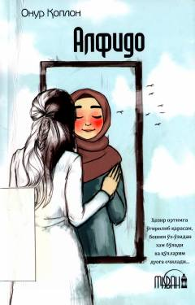

ATavba, umid va insoniy kechinmalarga boy ta'sirli badiiy asar.
Ushbu kitob turk yozuvchisi Onur Koplanning «Alfido» nomli asarining o'zbek tilidagi tarjimasi bo'lib, o'quvchini hayot, tavba va umid haqida chuqur o'ylashga undaydi. Asar ta'sirli kechinmalar va ruhiy iztiroblarga boy bo'lib, inson qalbidagi kechinmalarni ochib beradi. Tarjimon Abror Adham o'g'li tomonidan o'zbek tiliga o'girilgan.